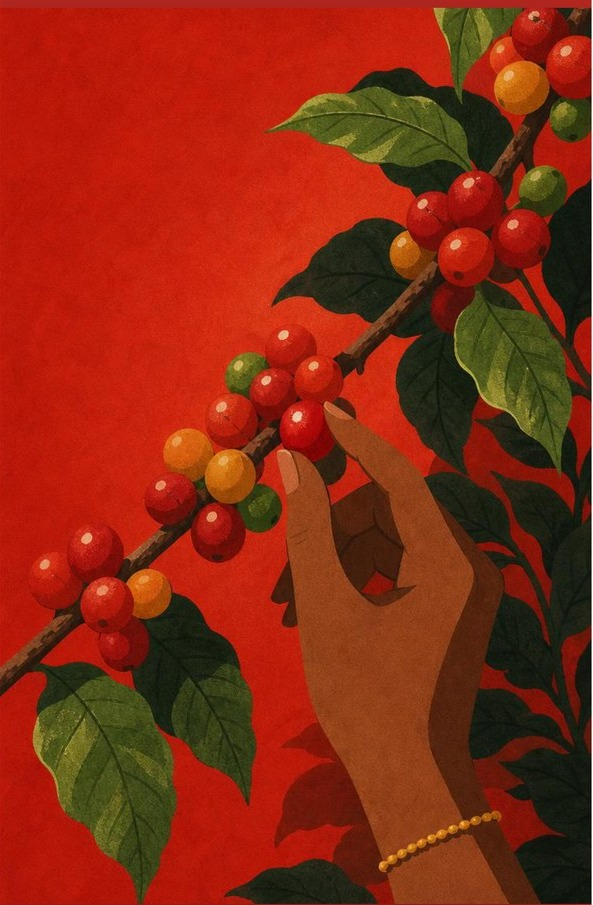

Sítio Tapete Verde, Minas Gerais
Do Vô para a sua xícara
Tradição familiar, excelência sensorial e inovação no campo
No Sítio Tapete Verde, a história da nossa família se mistura com a do café.
Cultivamos com agricultura regenerativa, cuidando do solo, da água e das
pessoas. Esse cuidado aparece na xícara: lotes com reconhecimento regional, certificações
e notas sensoriais acima de 85 pontos.
Não queremos ensinar você a gostar de café. Queremos acompanhar a sua
evolução, do café forte do dia a dia ao microlote raro, respeitando seu paladar,
seu bolso e a sua história.
+85pontos nos lotes especiais
100%origem rastreável
5linhas de elevação gradual
Agendar visita à fazenda